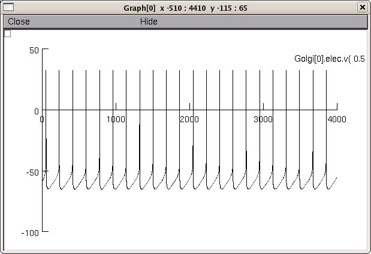

This is the readme for the model associated with the publications: 1. Solinas S, Forti L, Cesana E, Mapelli J, De Schutter E, D`Angelo E (2007) Computational reconstruction of pacemaking and intrinsic electroresponsiveness in cerebellar golgi cells. Front. Cell. Neurosci. 2. Solinas S, Forti L, Cesana E, Mapelli J , De Schutter E, D`Angelo E (2007) Fast-reset of pacemaking and theta-frequency resonance patterns in cerebellar golgi cells: Simulations of their impact in vivo. Front. Cell. Neurosci. The cerebellar cortex input is profoundly influenced by the inhibitory action of Golgi cells. Golgi cells display complex excitable properties including (i) low-frequency pacemaking, (ii) adapting high-frequency discharge during depolarization followed by AHP and phase-reset, and (iii) sagging inward rectification during hyperpolarization followed by rebound excitation (Forti et al., 2006). An initial pharmacological analysis indicated that pacemaking involved Ih, a persistent sodium current, an SK-type calcium-dependent K+ current, and probably an M-like K+current. In order to assess whether this set of currents was sufficient to explain pacemaking and the other Golgi cell excitable properties, we have developed a mathematical model. The above set of currents proved essential to generate the salient Golgi cell responses. Moreover, the role of other ion currents was predicted in order to obtain a proper quantitative matching of specific properties. In particular, Ih maintained the cell in the oscillatory regime, which was determined by the interplay of INa-p with IK-slow and IK-AHP. Although IK-slow and IK-AHP are redundant in the oscillatory process, IK-slow proved to be the most effective for generating intrinsic resonance. Moreover, IK-A and ICa-LVA are predicted to play an important role for regulating response timing, and the ICa-VA/IK-Ca system to regulate spike repolarization and high-frequency discharge. Our results suggest that a complex complement of ionic mechanisms is needed to fine-tune separate aspects of the neuronal response dynamics. Simulations also suggest that the Golgi cell may exploit these mechanisms to obtain a fine regulation of timing of incoming mossy fiber responses and granular layer circuit oscillation and bursting. Usage: Auto-launch from ModelDB or download and extract the archive. Then under: ---- MSWIN run mknrndll, cd to the archive and make the nrnmech.dll. Then double click on the mosinit.hoc file. ---- MAC OS X Drag and drop the Golgi_cell folder onto the mknrndll icon. Drag and drop the mosinit.hoc file onto the nrngui icon. ---- Linux/Unix Change directory to the Golgi_cell folder. run nrnivmodl. Then type nrngui mosinit.hoc ---- Once the simulation is running press Init & Run to generate a graph similar to fig 2. from "Computational reconstruction of pacemaking and intrinsic electroresponsiveness in cerebellar golgi cells":  These model files were supplied by Sergio Salinas.